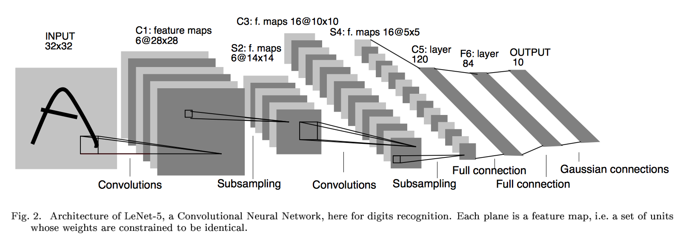
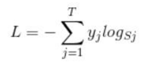
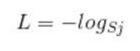
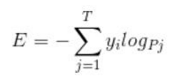
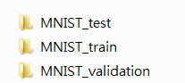
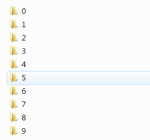
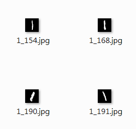
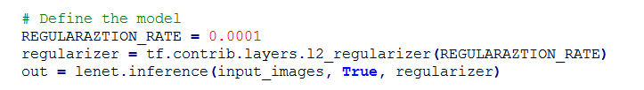

在之前的TensorFlow学习笔记——图像识别与卷积神经网络（链接：请点击我）中了解了一下经典的卷积神经网络模型LeNet模型。那其实之前学习了别人的代码实现了LeNet网络对MNIST数据集的训练。而这篇文章是想自己完成LeNet网络来训练自己的数据集。LeNet主要用来进行手写字符的识别与分类，下面记录一下自己学习的过程。
我的学习步骤分为以下四步：
LeNet是出自论文Gradient-Based Learning Applied to Document Recognition，是一种用于手写体字符识别的非常高效的卷积神经网络。那我要训练的是印刷体的数字和字母，可能难点就是字母大小尺寸不一。下面我尝试使用LeNet-5来进行识别。首先学习其网络结构。
LeNet-5这个网络虽然很小，但是包含了深度学习的基本模块：卷积层，池化层，全连接层。是其他深度学习模型的基础。LeNet网络奠定了现代卷积神经网络的基础。LeNet-5模型总共有7层，这里我们对LeNet-5进行深入分析。
下图展示了以MNIST数据集为例的LeNet-5模型架构：

下面再啰嗦一次。
这一层为原始的图像元素，LeNet-5模型接受的输入层大小为32*32*1，第一层卷积层过滤器的尺寸为5*5，深度为6，不使用全0填充，所以这一层的输出的尺寸为32-5+1=28面四个并打印为6，这一个卷积层总共有5*5*1*6+6=156个参数，其中6个未偏置项参数，因为下一层的节点矩阵有28*28*6=4704个结点，每个节点和5*5=25个当前层节点相连，每个神经元对应一个偏置项（这就是5*5+1的原因）所以本卷积层共有（5*5+1）*6*（28*28）=122304个连接。
那么也就是说，过滤器尺寸为[5, 5]，通道为1，深度为6。（除去输入层和输出层，我们有六个特征平面，包括两个卷积层，两个池化层，两个全连接层），特征图有6个，说明6个不同的卷积核，所以深度为6。
池化层又叫做下采样层，目的是压缩数据，降低数据维度。
这一层的输入为第一层的输出，是一个28*28*6的节点矩阵，本层采用的过滤器大小为2*2，长和宽的步长均为2，所以本层的输出矩阵大小为14*14*6
6个14*14的特征图，每个图中的每个单元与C1特征图中的一个2*2邻域相连接，不重叠。因此S2中每个特征图的大小是C1中特征图大小的1/4。
本层输入的矩阵大小为14*14*6，使用的过滤器大小为5*5，深度为16.本层不使用全0填充，步长为1.本层的输出矩阵大小为10*10*16。按照标准的卷积层，本层应该有5*5*6*16+16=2416个参数，10*10*16*（25+1）=41600个连接。
本层的输入矩阵大小为10*10*16，采用的过滤器大小为2*2，步长为2，本层的输出矩阵大小为5*5*16
本层的输入矩阵大小为5*5*16，在LeNet-5模型的论文中将这一层称为卷积层，但是因为过滤器的大小就是5*5，所以和全连接层没有区别，在之后的TensorFlow程序实现中也会将这一层看成全连接层。如果将5*5*16矩阵中的节点拉成一个向量，那么这一层和之前学习的全连接层就是一样的了。
本层的输出节点个数为120个，总共有5*5*16*120+120=48120个参数。
这一层还是卷积层，且有120个神经元，可以看做是120个特征图，每张特征图的大小为5*5，每个单元与S4层的全部16个单元的5*5领域相连，因此正好和池化层匹配（S4和C5之间的全连接）。
本层的输入节点个数为120个，输出节点个数为84个，总共参数为120*84+84=10164个。
之所以有84个单元，是因为输出层的设计，与C5层全相连，F6层计算输入向量和权重向量之间的点积，再加上一个偏置，所以84=7*12
本层的输入节点个数为84个，输出节点为10个，总共参数为84*10+10=850个。
该层有十个神经元，可以理解这是对于手写体10个数，哪个输出的数大，那个神经元代表的数字就是输出。
函数类型如下：
def conv2d( # pylint: disable=redefined-builtin,dangerous-default-value
input,
filter=None,
strides=None,
padding=None,
use_cudnn_on_gpu=True,
data_format="NHWC",
dilations=[1, 1, 1, 1],
name=None,
filters=None):
参数说明：
data_format：表示输入的格式，有两种分别为：“NHWC”和“NCHW”，默认为“NHWC”
input：输入是一个4维格式的（图像）数据，数据的 shape 由 data_format 决定：当 data_format 为“NHWC”输入数据的shape表示为[batch, in_height, in_width, in_channels]，分别表示训练时一个batch的图片数量、图片高度、 图片宽度、 图像通道数。当 data_format 为“NHWC”输入数据的shape表示为[batch, in_channels， in_height, in_width]
filter：卷积核是一个4维格式的数据：shape表示为：[height,width,in_channels, out_channels]，分别表示卷积核的高、宽、深度（与输入的in_channels应相同）、输出 feature map的个数（即卷积核的个数）。
strides：表示步长：一个长度为4的一维列表，每个元素跟data_format互相对应，表示在data_format每一维上的移动步长。当输入的默认格式为：“NHWC”，则 strides = [batch , in_height , in_width, in_channels]。其中 batch 和 in_channels 要求一定为1，即只能在一个样本的一个通道上的特征图上进行移动，in_height , in_width表示卷积核在特征图的高度和宽度上移动的布长，即 。
padding：表示填充方式：“SAME”表示采用填充的方式，简单地理解为以0填充边缘，当stride为1时，输入和输出的维度相同；“VALID”表示采用不填充的方式，多余地进行丢弃。
value：表示池化的输入：一个4维格式的数据，数据的 shape 由 data_format 决定，默认情况下shape 为[batch, height, width, channels]
ksize：表示池化窗口的大小：一个长度为4的一维列表，一般为[1, height, width, 1]，因不想在batch和channels上做池化，则将其值设为1。
举个简单的例子，假设一个五分类，然后一个样本I的标签 y = [0, 0, 0, 1, 0]，也就是说样本I的真实标签是4，假设模型预测的结果概率（softmax的输出）p=[0.1,0.15,0.05,0.6,0.1]，可以看出这个预测是对的，那么对应的损失L=-log(0.6)，也就是当这个样本经过这样的网络参数产生这样的预测p时，它的损失是-log(0.6)。那么假设p=[0.15,0.2,0.4,0.1,0.15]，这个预测结果就很离谱了，因为真实标签是4，而你觉得这个样本是4的概率只有0.1（远不如其他概率高，如果是在测试阶段，那么模型就会预测该样本属于类别3），对应损失L=-log(0.1)。那么假设p=[0.05,0.15,0.4,0.3,0.1]，这个预测结果虽然也错了，但是没有前面那个那么离谱，对应的损失L=-log(0.3)。我们知道log函数在输入小于1的时候是个负数，而且log函数是递增函数，所以-log(0.6) < -log(0.3) < -log(0.1)。简单讲就是你预测错比预测对的损失要大，预测错得离谱比预测错得轻微的损失要大。
下面简单说一下损失函数 softmax loss：

首先，L是损失，Sj是softmax的输出向量S的第j个值，那Sj表示这个样本属于第j个类别的概率。yj 前面有个求和符号，j的范围是1~T（即类别1到类别T），因此y是一个1*T的向量，里面的T个值，而且只有1个值是1，其他 T-1个值都是0，那么那个位置的值是1呢？真实标签对应的位置的那个值是1，其他都是0，所以这个公式可以改为：

当然，此时要限定 j是指当前样本的真实标签。
损失函数是在训练过程中，得到的输出值与理想输出值的差距，这里有很多衡量的标准，比如均方误差的方法，也就是输出值和理想值的方差来表示：
loss = tf.reduce_mean(tf.square(yout - Y))公式如下：

TensorFlow使用的函数如下：
tf.nn.dropout(x, keep_prob, noise_shape=None, seed=None,name=None)
参数意义：
执行训练的过程就是让已有的输入和输出数据一次又一次的填入模型中，根据数据进行训练。什么时候进行呢？那就是需要搭建一个平台，让它在这个平台上运行，这个平台叫做会话，tf.Session()，就好比你修好了路，当然不作为摆设，你要在某个时间段内开始通车。
with tf.Session() as sess:
sess.run(tf.global_variables_initializer())
for i in range(1000):
sess.run(optimizer, feed_dict = {X : x, Y : y})
卷积网络在本质上是一种输入到输出的映射，它能够学习大量的输入与输出之间的映射关系，而不需要任何输入和输出之间的精确的数学表达式。
CNN能够得出原始图像的有效表征，这使得CNN能够直接从原始像素中，经过极少的预处理，识别视觉上面的规律。然而，由于当时缺乏大规模训练数据，计算机的计算能力也跟不上，LeNet-5对于复杂问题的处理结果并不理想。
2006年起，人们设计了很多方法，想要克服难以训练深度CNN的困难。其中，最出名的时，Krizhevsky et al 提出了一个经典的CNN结构，并在图像识别任务上取得了重大突破，其方法的整体框架叫做AlexNet，与LeNet-5类似，但是要加深一点，此后深度卷积如雨后春笋一般，出现了很多。
首先，我们热个手，使用MNIST数据的官方格式，直接进行训练。这里数据没有进行处理，也没有转化。
代码：
# _*_coding:utf-8_*_
'''
LeNet是第一个成功应用于数字识别问题的卷积神经网络
LeNet模型总共有7层，在MNIST上LeNet-5模型可以达到99.2%的正确率
'''
import tensorflow as tf
import tensorflow.examples.tutorials.mnist.input_data as input_data
import time
import os
os.environ['CUDA_VISIBLE_DEVICES'] = '1,2'
# 获取mnist数据
mnist_data_set = input_data.read_data_sets('MNIST_data', one_hot=True)
# 声明输入图片数据类型，mnist的手写体图片大小为28*28=784
# None表示行向量的维度是任意的，也就是一次可以输出多张图片
# placeholder 基本都是占位符，先定义，后面会用到的
x = tf.placeholder('float', [None, 784])
# y_为网络的输出,数字十个类别
y_ = tf.placeholder('float', [None, 10])
# 把输入的数据转变成二维形式，用于卷积计算
# -1表示一次可以存储多张照片，1表示图像的通道数为1
x_image = tf.reshape(x, [-1, 28, 28, 1])
# 卷积核初始化，大小为6个5*5的卷积核，1和x_image的1对应，即为图像的通道数
filter1 = tf.Variable(tf.truncated_normal([5, 5, 1, 6]))
# 偏置项
bias1 = tf.Variable(tf.truncated_normal([6]))
# 二维卷积计算
conv1 = tf.nn.conv2d(x_image, filter1, strides=[1, 1, 1, 1], padding='SAME')
h_conv1 = tf.nn.sigmoid(conv1 + bias1)
# 池化层
maxPool2 = tf.nn.max_pool(h_conv1, ksize=[1, 2, 2, 1], strides=[1, 2, 2, 1], padding='SAME')
filter2 = tf.Variable(tf.truncated_normal([5, 5, 6, 16]))
bias2 = tf.Variable(tf.truncated_normal([16]))
conv2 = tf.nn.conv2d(maxPool2, filter2, strides=[1, 1, 1, 1], padding='SAME')
h_conv2 = tf.nn.sigmoid(conv2 + bias2)
maxPool3 = tf.nn.max_pool(h_conv2, ksize=[1, 2, 2, 1], strides=[1, 2, 2, 1], padding='SAME')
filter3 = tf.Variable(tf.truncated_normal([5, 5, 16, 120]))
bias3 = tf.Variable(tf.truncated_normal([120]))
conv3 = tf.nn.conv2d(maxPool3, filter3, strides=[1, 1, 1, 1], padding='SAME')
h_conv3 = tf.nn.sigmoid(conv3 + bias3)
# 全连接层，权重初始化
W_fc1 = tf.Variable(tf.truncated_normal([7 * 7 * 120, 80]))
# 偏置项
b_fc1 = tf.Variable(tf.truncated_normal([80]))
# 将卷积的输出展开
h_pool2_flat = tf.reshape(h_conv3, [-1, 7 * 7 * 120])
h_fc1 = tf.nn.sigmoid(tf.matmul(h_pool2_flat, W_fc1) + b_fc1)
W_fc2 = tf.Variable(tf.truncated_normal([80, 10]))
b_fc2 = tf.Variable(tf.truncated_normal([10]))
# 输出层，使用softmax进行多分类
y_conv = tf.nn.softmax(tf.matmul(h_fc1, W_fc2) + b_fc2)
# 损失函数，交叉熵
cross_entropy = -tf.reduce_sum(y_ * tf.log(y_conv))
# 使用梯度下降法来更新权重，学习速率为0.001，改为0.01的话会导致权重更新有问题，准确率会滴
train_step = tf.train.GradientDescentOptimizer(0.001).minimize(cross_entropy)
sess = tf.InteractiveSession()
# 测试准确率，tf.argmax() 计算行或列的最大值，返回最大值下标的向量
# tf.equal() 计算两个向量对应的元素是否相等，返回数据为bool
# tf.cast() 把bool数据转化为浮点型
correct_prediction = tf.equal(tf.argmax(y_conv, 1), tf.argmax(y_, 1))
accuracy = tf.reduce_mean(tf.cast(correct_prediction, 'float'))
# 对所有变量进行初始化
sess.run(tf.global_variables_initializer())
start_time = time.time()
for i in range(50000):
# 获取训练数据，每次100张
# 我们后面取数据的时候，直接获取feed_dict={x: batch[0], y_true: batch[1]}
# batch = mnist_data_set.train.next_batch(60)
batch_xs, batch_ys = mnist_data_set.train.next_batch(100)
train_step.run(feed_dict={x: batch_xs, y_: batch_ys})
# 每个100次输出当前的准确率
if i % 100 == 0:
train_accuracy = accuracy.eval(feed_dict={x: batch_xs, y_: batch_ys})
print('step %d, training accuracy %g' % (i, train_accuracy))
# 计算时间间隔
end_time = time.time()
print('time: ', (end_time - start_time))
start_time = end_time
print("Test accuracy: {}".format(accuracy.eval(session=sess,
feed_dict={
x: mnist_data_set.test.images,
y_: mnist_data_set.test.labels})))
# 关闭会话
sess.close()
训练过程如下：
step 48200, training accuracy 1
time: 0.240248441696167
step 48300, training accuracy 1
time: 0.24075675010681152
step 48400, training accuracy 1
time: 0.3005177974700928
step 48500, training accuracy 1
time: 0.2406449317932129
step 48600, training accuracy 1
time: 0.24107027053833008
step 48700, training accuracy 0.99
time: 0.24148797988891602
step 48800, training accuracy 0.98
time: 0.24003911018371582
step 48900, training accuracy 0.99
time: 0.23934340476989746
step 49000, training accuracy 1
time: 0.28536438941955566
step 49100, training accuracy 0.98
time: 0.24154186248779297
step 49200, training accuracy 1
time: 0.24214410781860352
step 49300, training accuracy 0.96
time: 0.24277353286743164
step 49400, training accuracy 1
time: 0.2415931224822998
step 49500, training accuracy 1
time: 0.2908365726470947
step 49600, training accuracy 1
time: 0.24100923538208008
step 49700, training accuracy 1
time: 0.2422494888305664
step 49800, training accuracy 1
time: 0.24294066429138184
step 49900, training accuracy 0.99
time: 0.24169301986694336
Test accuracy: 0.9772999882698059
训练的准确率基本在98%~100%之间，并且测试集达到了97.7%的准确率，效果还是不错的。
注意：
# ***************** 改进1 *****************
x = tf.placeholder('float', shape=[None, 28 * 28])
y_ = tf.placeholder('float', shape=[None, 10])
# 当然这里定义数据类型的时候也可以这样写
x = tf.placeholder(tf.float32, [None, 784])
y_ = tf.placeholder(tf.float32, [None, 10])
# ***************** 改进2 *****************
train_step = tf.train.AdamOptimizer(1e-4).minimize(cross_entropy)
#这里用Ａdam优化器优化函数 也可以使用随机梯度下降优化函数
learning_rate = 0.001
optimizer= tf.train.GradientDescentOptimizer(learning_rate).minimize(loss)
# ***************** 改进3 *****************
# 通过tf.reshape函数将第五层的输出变成一个batch的向量
# reshaped = tf.reshape(relu3, [pool_shape[0], nodes])
改为：（不然会报错）
reshaped = tf.layers.flatten(relu3)
大多数书上和网络上实例就是使用已经封装好的mnist数据集来训练卷积神经网络。但是这里我想用神经网络来训练自己的数据集，所以如何将自己的数据集导入神经网络？这里我首先将MNIST数据转化为TFRecord数据格式进行训练，下一步训练自己的数据集。
我的解决思路如下：
1，将自己的数据集转换为TensorFlow支持的神经网络输入格式TFRecord。
2，重建LeNet-5卷积神经网络
3，对神经网络进行训练
首先，将自己的数据集转化为TFRecord，我之前的博客有说，这里不再学习。
将MNIST数据集中的所有文件存储到一个TFRecord文件中，然后我们用的时候，直接读取封装好的MNIST数据的TFRecord文件。
但是后面需要使用如何读取TFRecord文件的函数，这里注意，你生成TFRecord文件的函数和读取的函数一定要保持一致，不然会报错。
将MNIST数据集格式转化为TFRecord格式，前面有讲过，这里不再赘述。
想学习，请参考博客：使用TensorFlow操作MNIST数据（2）
这里粘贴一下处理MNIST数据的代码：
1，读取MNIST数据，并转化为TFRecord格式：
#_*_coding:utf-8_*_
import tensorflow as tf
from tensorflow.examples.tutorials.mnist import input_data
import os
import numpy as np
# 生成整数的属性
def _int64_feature(value):
return tf.train.Feature(int64_list=tf.train.Int64List(value=[value]))
# 生成字符串类型的属性
def _bytes_feature(value):
return tf.train.Feature(bytes_list=tf.train.BytesList(value=[value]))
def create_records(images, labels, num_example, outpout):
'''
实现将MNIST数据集转化为records
注意：读取的图像数据默认为uint8，然后转化为tf的字符串型BytesList保存
:return:
'''
# 训练图像的分辨率，作为example的属性
pixels = images.shape[1]
# 创建一个writer来写TFRecord文件
writer = tf.python_io.TFRecordWriter(outpout)
# 将每张图片都转化为一个Example
for i in range(num_example):
# 将图像转化为字符串
image_raw = images[i].tostring()
# 将一个样例转化为Example，Protocal Buffer并将所有信息写入这个数据结构
example = tf.train.Example(features=tf.train.Features(
feature={
'pixels': _int64_feature(pixels),
'labels': _int64_feature(np.argmax(labels[i])),
'image_raw': _bytes_feature(image_raw)
}
))
# 将Example写入TFRecord文件
writer.write(example.SerializeToString())
print("data processing success")
writer.close()
if __name__ == '__main__':
if not os.path.exists('mnistrecord'):
os.mkdir('mnistrecord')
# 导入MNIST数据集
mnist = input_data.read_data_sets('MNIST_data/', dtype=tf.uint8, one_hot=True)
train_images = mnist.train.images
train_labels = mnist.train.labels
train_num_example = mnist.train.num_examples
# 存储train_TFRecord文件的地址
train_filename = 'mnistrecord/trainmnist28.tfrecords'
create_records(train_images, train_labels, train_num_example, train_filename)
test_images = mnist.test.images
test_labels = mnist.test.labels
test_num_example = mnist.test.num_examples
# 存储train_TFRecord文件的地址
test_filename = 'mnistrecord/testmnist28.tfrecords'
create_records(test_images, test_labels, test_num_example, test_filename)
2，读取MNIST的TFRecord文件
# _*_coding:utf-8_*_
import tensorflow as tf
def read_record(filename):
'''
读取TFRecord文件
:return:
'''
# 创建一个队列来维护输入文件列表
filename_queue = tf.train.string_input_producer([filename])
# 创建一个reader来读取TFRecord文件中Example
reader = tf.TFRecordReader()
# 从文件中读取一个Example
_, serialized_example = reader.read(filename_queue)
# 用FixedLenFeature 将读入的Example解析成tensor
features = tf.parse_single_example(
serialized_example,
features={
'image_raw': tf.FixedLenFeature([], tf.string),
'pixels': tf.FixedLenFeature([], tf.int64),
'labels': tf.FixedLenFeature([], tf.int64)
}
)
# tf.decode_raw将字符串解析成图像对应的像素数组
images = tf.decode_raw(features['image_raw'], tf.uint8)
labels = tf.cast(features['labels'], tf.int32)
pixels = tf.cast(features['pixels'], tf.int32)
init_op = tf.global_variables_initializer()
with tf.Session() as sess:
sess.run(init_op)
# 启动多线程处理输入数据
coord = tf.train.Coordinator()
threads = tf.train.start_queue_runners(sess=sess, coord=coord)
# 每次运行读出一个Example,当所有样例读取完之后，再次样例中程序会重头 读取
for i in range(10):
# 在会话中会取出image 和label
image, label = sess.run([images, labels])
coord.request_stop()
coord.join(threads)
print("end code")
if __name__ == '__main__':
train_filename = 'mnistrecord/trainmnist28.tfrecords'
test_filename = 'mnistrecord/testmnist28.tfrecords'
read_record(filename=train_filename)
定义LeNet-5的结构，注意之前已经说过了，这里不再赘述，只贴代码。其实网上各个博客啊，书啊写的代码都大同小异，虽然定义形式不同，但是LeNet-5的结构确是一步都不少，所以各位还是按照自己写代码的风格写就行。
下面粘贴一个TensorFlow实战中定义的LeNet-5结构的定义代码：
# _*_coding:utf-8_*_
import tensorflow as tf
# 配置神经网络的参数
INPUT_NODE = 784 # 这里输入的参数是图片的尺寸 这里是28*28=784
OUTPUT_NODE = 51 # 这里是输出的图片类型，总共51类
IMAGE_SIZE = 28
NUM_CHANNELS = 3
NUM_LABELS = 51
# 第一层卷积层的尺寸和深度
CONV1_DEEP = 6
CONV1_SIZE = 5
# 第三层卷积层的尺寸和深度
CONV2_DEEP = 16
CONV2_SIZE = 5
# 第五层卷积层的尺寸和深度
CONV3_DEEP = 120
CONV3_SIZE = 5
# 全连接层的节点个数
FC_SIZE = 84
# 定义卷积神经网络的前向传播过程
# 这里添加一个新的参数train，用于区分训练过程和测试过程
# 在这个程序中将用到Dropout方法，dropout可以进一步提升模型可靠性，并防止过拟合
# 注意dropout层只能在训练过程中使用
def inference(input_tensor, train, regularizer):
'''
声明第一层卷积层的变量并实现前向传播过程，通过使用不同的命名空间来隔离不同层的变量
这可以让每一层中变量命名只需要考虑在当前层的作用，而不需要担心命名重复的问题
和标准的LeNet-5模型不太一样，这里定义的卷积层输入为28*28*1的原始MNIST图片箱数
因为卷积层使用了全0填充，所以输出为28*28*6的矩阵
:param input_tensor:
:param train:
:param regularizer:
:return:
'''
with tf.variable_scope('layer1-conv1'): # [5,5,3,6]
conv1_weights = tf.get_variable("weight",
[CONV1_SIZE, CONV1_SIZE, NUM_CHANNELS, CONV1_DEEP],
initializer=tf.truncated_normal_initializer(stddev=0.1))
conv1_biases = tf.get_variable('bias', [CONV1_DEEP],
initializer=tf.constant_initializer(0.0))
# 使用边长为5， 深度为6的过滤器，过滤器移动的步长为1，且使用全0填充
conv1 = tf.nn.conv2d(input_tensor, conv1_weights,
strides=[1, 1, 1, 1], padding='SAME')
relu1 = tf.nn.relu(tf.nn.bias_add(conv1, conv1_biases))
# 实现第二层池化层的前向传播过程，这里选用最大池化层
# 池化层过滤器的边长为2，使用全零填充且移动的步长为2，这一层的输入为上一层的输出
# 也就是28*28*6的矩阵 输出为14*14*6的矩阵
with tf.name_scope('layer2-pool1'):
pool1 = tf.nn.max_pool(relu1, ksize=[1, 2, 2, 1], strides=[1, 2, 2, 1],
padding='SAME')
# 声明第三层卷积层的变量并实现前向传播过程，这一层输入为14*14*6的矩阵
# 因为卷积层没有使用全零填充，所以输出为10*10*16的矩阵
with tf.variable_scope('layer3-conv2'): # [5,5,3,16]
conv2_weights = tf.get_variable("weight",
[CONV2_SIZE, CONV2_SIZE, NUM_CHANNELS, CONV2_DEEP],
initializer=tf.truncated_normal_initializer(stddev=0.1))
conv2_biases = tf.get_variable('bias', [CONV2_DEEP],
initializer=tf.constant_initializer(0.0))
# 使用边长为5， 深度为16的过滤器，过滤器移动的步长为1，bububu不使用全0填充
conv2 = tf.nn.conv2d(pool1, conv2_weights,
strides=[1, 1, 1, 1], padding='VALID')
relu2 = tf.nn.relu(tf.nn.bias_add(conv2, conv2_biases))
# 实现第四层池化层的前向传播过程，这一层和第二层的结构是一样的
# 这里输入10*10*16的矩阵，输出为5*5*16的矩阵
with tf.name_scope('layer4-pool2'):
pool2 = tf.nn.max_pool(relu2, ksize=[1, 2, 2, 1], strides=[1, 2, 2, 1],
padding='VALID')
# 声明第五层全连接层（实际上为卷积层）的变量并实现前向传播过程
# 这一层输入是5*5*16的矩阵，因为没有使用全0填充，所以输出为1*1*120
with tf.name_scope('layer5-conv3'):
conv3_weights = tf.get_variable("weight",
[CONV3_SIZE, CONV3_SIZE, NUM_CHANNELS, CONV3_DEEP],
initializer=tf.truncated_normal_initializer(stddev=0.1))
conv3_biases = tf.get_variable('bias', [CONV3_DEEP],
initializer=tf.constant_initializer(0.0))
# 使用边长为5， 深度为6的过滤器，过滤器移动的步长为1，bububu不使用全0填充
conv3 = tf.nn.conv2d(pool2, conv3_weights,
strides=[1, 1, 1, 1], padding='VALID')
relu3 = tf.nn.relu(tf.nn.bias_add(conv3, conv3_biases))
# 将第五层卷积层的输出转化为第六层全连接层的输入格式
# 第五层的输出为1*1*120的矩阵，然而第六层全连接层需要的输出格式为向量
# 所以这里需要将这个1*1*120的矩阵拉直成一个向量
# relu3.get_shape函数可以得到第五层输出矩阵的维度而不需要手工计算。
# 注意因为每一层神经网络的输入输出都为一个batch的矩阵，
# 所以这里得到的维度也包含了一个batch中数据的个数。
pool_shape = relu3.get_shape().as_list()
# 计算将矩阵拉直成向量之后的长度，这个长度就是矩阵长度及深度的乘积
# 注意这里pool_shape[0]为一个batch中数据的个数
nodes = pool_shape[1] * pool_shape[2] * pool_shape[3]
# 通过tf.reshape函数将第五层的输出变成一个batch的向量
reshaped = tf.reshape(relu3, [pool_shape[0], nodes])
# 声明第六层全连接层的变量并实现前向传播过程，这一层的输入是拉直之后的一组向量
# 向量的长度为1120，输出是一组长度为84的向量
# 这一层和之前的LeNet基本一致，唯一的区别就是引入的dropout层
# dropout在训练时会随机将部分节点的输出改为0
# dropout可以避免过拟合问题，从而使得在测试数据上的效果更好
# dropout一般只在全连接层而不是卷积层或者池化层使用
with tf.variable_scope('layer6-fc1'):
fc1_weights = tf.get_variable('weight', [nodes, FC_SIZE],
initializer=tf.truncated_normal_initializer(stddev=0.1))
# 只有全连接层的权重需要加入正则化
if regularizer != None:
tf.add_to_collection('losses', regularizer(fc1_weights))
fc1_biases = tf.get_variable('bias', [FC_SIZE])
initializer = tf.constant_initializer(0.1)
fc1 = tf.nn.relu(tf.matmul(reshaped, fc1_weights) + fc1_biases)
if train:
fc1 = tf.nn.dropout(fc1, 0.5)
# 声明第七层全连接的变量并实现前向传播过程，这一层的输入为一组长度为为84的向量
#输出为51的向量，这一层的输出通过softmax之后就得到了最后的分类结果
with tf.variable_scope('layer7-fc2'):
fc2_weights = tf.get_variable('weight',
[FC_SIZE, NUM_LABELS],
initializer=tf.truncated_normal_initializer(stddev=0.1))
if regularizer != None:
tf.add_to_collection('losses', regularizer(fc2_weights))
fc2_biases = tf.get_variable('bias', [NUM_LABELS])
initializer = tf.constant_initializer(0.1)
logit = tf.matmul(fc1, fc2_weights) + fc2_biases
# 返回第七层的输出
return logit
下面对输入的数据进行解析。
# _*_coding:utf-8_*_
import tensorflow as tf
import os
# os.environ['CUDA_VISIBLE_DEVICES'] = '1'
# 1,输入数据的解析和预处理
def read_records(filename, resize_height, resize_width, type=None):
'''
解析record文件：源文件的图像数据是RGB，uint8 【0， 255】一般作为训练数据时，需要归一化到[0, 1]
:param filename:
:param resize_height:
:param resize_width:
:param type: 选择图像数据的返回类型
None:默认将uint8-[0,255]转为float32-[0,255]
normalization:归一化float32-[0,1]
centralization:归一化float32-[0,1],再减均值中心化
:return:
'''
# 创建文件队列，不限读取的数量
filename_queue = tf.train.string_input_producer([filename])
# create a reader from file queue
reader = tf.TFRecordReader()
# reader 从文件队列中读入一个序列化的样本
_, serialized_example = reader.read(filename_queue)
# get feature from serialized example
# 解析符号化的样本
features = tf.parse_single_example(
serialized_example,
features={
'image_raw': tf.FixedLenFeature([], tf.string),
'height': tf.FixedLenFeature([], tf.int64),
'width': tf.FixedLenFeature([], tf.int64),
'depth': tf.FixedLenFeature([], tf.int64),
'label': tf.FixedLenFeature([], tf.int64)
}
)
tf_image = tf.decode_raw(features['image_raw'], tf.uint8) # 获得图像原始的数据
tf_height = features['height']
tf_width = features['width']
tf_depth = features['depth']
tf_label = tf.cast(features['label'], tf.int32)
# PS: 恢复原始图像数据，reshape的大小必须与保存之前的图像shape一致，否则出错
tf_image = tf.reshape(tf_image, [resize_height, resize_width, 3]) # 设置图像的维度
# 存储的图像类型为uint8，TensorFlow训练时数据必须是tf.float32
if type is None:
tf_image = tf.cast(tf_image, tf.float32)
elif type == 'normalization': # [1]若需要归一化请使用:
# 仅当输入数据是uint8,才会归一化[0,255]
# tf_image = tf.image.convert_image_dtype(tf_image, tf.float32)
tf_image = tf.cast(tf_image, tf.float32) * (1. / 255.0) # 归一化
elif type == 'centralization':
# 若需要归一化,且中心化,假设均值为0.5,请使用:
tf_image = tf.cast(tf_image, tf.float32) * (1. / 255) - 0.5 # 中心化
# 这里仅仅返回图像和标签
# return tf_image, tf_height,tf_width,tf_depth,tf_label
return tf_image, tf_label
def get_batch_images(images, labels, batch_size, labels_nums, one_hot=False,
shuffle=False, num_threads=1):
'''
:param images: 图像
:param labels: 标签
:param batch_size:
:param labels_nums: 标签个数
:param one_hot: 是否将labels转化为one_hot 的形式
:param shuffle: 是否打乱顺序，一般train时，shuffle=True，验证时shuffle=False
:param num_threads:
:return: 返回batch的images和labels
'''
min_after_dequeue = 200
# 保证 capacity必须大于 min_after_dequeue的参数值
capacity = min_after_dequeue + 3 * batch_size
if shuffle:
images_batch, labels_batch = tf.train.shuffle_batch([images, labels],
batch_size=batch_size,
capacity=capacity,
min_after_dequeue=min_after_dequeue,
num_threads=num_threads)
else:
images_batch, labels_batch = tf.train.batch([images, labels],
batch_size=batch_size,
capacity=capacity,
num_threads=num_threads)
if one_hot:
labels_batch = tf.one_hot(labels_batch, labels_nums, 1, 0)
return images_batch, labels_batch
处理之后，返回的时批量的image和对应的label。
这里我没有用上面的数据训练，其实是这样的。就是说，我做了一个实验，将MNIST的数据读出来，并写成图片，我发现，每个字母和数字均在一个文件夹下面。而不是说这10类，每个都在自己的文件夹下面，这么整齐。所以我没有直接将MNIST写成TFRecord格式，然后读取TFRecord格式，我发现这是不可行的。
所以，我将MNIST数据转化为图片，并且每个数字放在每个数字的文件夹下面，然后训练。这样就可以按照我想要的方式训练了，而且可以验证一下MNIST的准确率，是否和上面的接近，毕竟对于源数据，我只做了的操作就是，将其转换为图片，再转化为TFRecord格式再训练。如果类似，那就没问题。下面尝试。
结果如图，即转化为这样：

第二层，（随便进一个目录）

第三层（随便进入一个目录）

代码如下：
# _*_coding:utf-8_*_
import cv2
import numpy as np
import tensorflow as tf
from tensorflow.examples.tutorials import mnist
from tensorflow.examples.tutorials.mnist import input_data
from PIL import Image
import os
# save raw image
def save_raw():
# read data from mnist. if data not exist, will download automatically
mnist = input_data.read_data_sets("MNIST_data/", one_hot=True)
# we save image raw data to data/raw/ folder
# if the folder not there, create it
save_dir = 'MNIST_data/raw/'
if os.path.exists(save_dir) is False:
os.makedirs(save_dir)
# save 20 images in training dataset
for i in range(20):
# please attention，mnist.train.images[i, :] is ith image, sequence started from 0
image_array = mnist.train.images[i, :]
# the image in MNIST of TensorFlow, image is 784 length vector, we recover it to 28x28 image
image_array = image_array.reshape(28, 28)
# save image as mnist_train_0.jpg, mnist_train_1.jpg, ... ,mnist_train_19.jpg
filename = save_dir + 'mnist_train_%d.jpg' % i
# save image_array as image
# use Image.fromarray to convert image，then call save function to save
# because Image.fromarray is not good to support float, we have to convert it to uint8 and then read as 'L'
Image.fromarray((image_array * 255).astype('uint8'), mode='L').convert('RGB').save(filename)
def convert_mnist_img_raw(data, data1, save_path):
for i in range(data.images.shape[0]):
# TensorFlow中的MNIST图片是一个784维的向量，我们重新把它还原为28x28维的图像。
image_array = data.images[i, :]
image_array = image_array.reshape(28, 28)
img_num = (image_array * 255).astype(np.uint8)
# img_num = (image_array * 255).astype('uint8')
label = data1.labels[i]
# cv2.imshow('image', img)
# cv2.waitKey(500)
filename = save_path + '/{}_{}.jpg'.format(label, i)
print(filename)
cv2.imwrite(filename, img_num)
# Image.fromarray(img_num, mode='L').save(filename)
def convert_mnist_img(data, data1, save_path):
for i in range(data.images.shape[0]):
# TensorFlow中的MNIST图片是一个784维的向量，我们重新把它还原为28x28维的图像。
image_array = data.images[i, :]
image_array = image_array.reshape(28, 28)
img_num = (image_array * 255).astype(np.uint8)
# img_num = (image_array * 255).astype('uint8')
label = data1.labels[i]
if not os.path.exists(os.path.join(save_path, str(label))):
os.mkdir(os.path.join(save_path, str(label)))
# cv2.imshow('image', img)
# cv2.waitKey(500)
filename = save_path + '/' + str(label) + '/{}_{}.jpg'.format(label, i)
print(filename)
cv2.imwrite(filename, img_num)
# Image.fromarray(img_num, mode='L').save(filename)
if __name__ == '__main__':
mnist = input_data.read_data_sets('MNIST_data/', one_hot=True)
mnist1 = input_data.read_data_sets('MNIST_data/')
content_name = ['MNIST_train', 'MNIST_test', 'MNIST_validation']
# print(mnist.validation.images.shape[0])
for i in content_name:
if not os.path.exists(i):
os.mkdir(i)
# convert_mnist_img_raw(mnist.validation, mnist1.validation, 'MNIST_validation') # 55000
convert_mnist_img(mnist.train, mnist1.train, 'MNIST_train') # 55000
print('convert training data to image complete')
convert_mnist_img(mnist.test, mnist1.test, 'MNIST_test') # 10000
print('convert test data to image complete')
convert_mnist_img(mnist.validation, mnist1.validation, 'MNIST_validation') # 5000
print('convert validation data to image complete')
转化之后呢，我们其实就和下面要学习的训练自己的数据集一样了。这里就不粘贴训练代码了，因为下面训练自己的数据的代码和这个其实一样，只不过是数据集变了而已。
下面只展示一下，使用上面定义的LeNet-5模型，和调用slim中谷歌官方定义好的LeNet-5模型训练的结果，看是否类似。（如果效果不好，就调参，这种模型，我将其训练批次调大了，学习率提高了，比较模型深度不是很深）
1，slim自带的LeNet-5模型训练结果
训练结果如下：
2019-12-07 17:24:49.511197: Step [90100] train Loss : 0.034825, training accuracy : 0.99
2019-12-07 17:24:51.960556: Step [90200] train Loss : 0.031647, training accuracy : 0.98
2019-12-07 17:24:54.401640: Step [90300] train Loss : 0.013821, training accuracy : 1
2019-12-07 17:24:56.827365: Step [90400] train Loss : 0.009416, training accuracy : 1
2019-12-07 17:24:59.285245: Step [90500] train Loss : 0.050181, training accuracy : 0.99
2019-12-07 17:25:00.231120: Step [90500] val Loss : 0.036682, val accuracy : 0.9886
2019-12-07 17:25:02.613078: Step [90600] train Loss : 0.043965, training accuracy : 1
2019-12-07 17:25:05.262525: Step [90700] train Loss : 0.003886, training accuracy : 1
2019-12-07 17:25:07.643164: Step [90800] train Loss : 0.008936, training accuracy : 0.99
2019-12-07 17:25:10.086635: Step [90900] train Loss : 0.026223, training accuracy : 1
2019-12-07 17:25:12.562384: Step [91000] train Loss : 0.044388, training accuracy : 1
2019-12-07 17:25:13.759702: Step [91000] val Loss : 0.036466, val accuracy : 0.989
------save:mnistmodelslenet/best_models_91000_0.9890.ckpt
2019-12-07 17:25:16.260234: Step [91100] train Loss : 0.004893, training accuracy : 1
2019-12-07 17:25:18.732957: Step [91200] train Loss : 0.008099, training accuracy : 1
2019-12-07 17:25:21.232881: Step [91300] train Loss : 0.010900, training accuracy : 1
2019-12-07 17:25:23.690347: Step [91400] train Loss : 0.006691, training accuracy : 1
2019-12-07 17:25:26.077798: Step [91500] train Loss : 0.019277, training accuracy : 1
2019-12-07 17:25:27.110041: Step [91500] val Loss : 0.036495, val accuracy : 0.9884
2019-12-07 17:25:29.541535: Step [91600] train Loss : 0.005347, training accuracy : 1
2019-12-07 17:25:32.070571: Step [91700] train Loss : 0.030143, training accuracy : 0.99
2019-12-07 17:25:34.517069: Step [91800] train Loss : 0.001880, training accuracy : 1
2019-12-07 17:25:36.974632: Step [91900] train Loss : 0.013069, training accuracy : 1
2019-12-07 17:25:39.431848: Step [92000] train Loss : 0.017495, training accuracy : 1
2019-12-07 17:25:40.314588: Step [92000] val Loss : 0.036441, val accuracy : 0.9892
------------save:mnistmodelslenet/model.ckpt--92000
------save:mnistmodelslenet/best_models_92000_0.9892.ckpt
2019-12-07 17:25:42.887467: Step [92100] train Loss : 0.020958, training accuracy : 0.99
2019-12-07 17:25:45.348507: Step [92200] train Loss : 0.017127, training accuracy : 1
2019-12-07 17:25:47.756854: Step [92300] train Loss : 0.019064, training accuracy : 1
2019-12-07 17:25:50.219324: Step [92400] train Loss : 0.032903, training accuracy : 0.99
2019-12-07 17:25:52.707338: Step [92500] train Loss : 0.011051, training accuracy : 1
2019-12-07 17:25:53.819837: Step [92500] val Loss : 0.036477, val accuracy : 0.9888
2019-12-07 17:25:56.214045: Step [92600] train Loss : 0.005283, training accuracy : 1
2019-12-07 17:25:58.574659: Step [92700] train Loss : 0.038343, training accuracy : 0.99
2019-12-07 17:26:01.022120: Step [92800] train Loss : 0.029472, training accuracy : 1
2019-12-07 17:26:03.614888: Step [92900] train Loss : 0.029430, training accuracy : 1
2019-12-07 17:26:06.048187: Step [93000] train Loss : 0.005918, training accuracy : 1
2019-12-07 17:26:07.162769: Step [93000] val Loss : 0.037015, val accuracy : 0.9886
2019-12-07 17:26:09.589461: Step [93100] train Loss : 0.013980, training accuracy : 1
2019-12-07 17:26:11.909845: Step [93200] train Loss : 0.022814, training accuracy : 1
2019-12-07 17:26:14.209764: Step [93300] train Loss : 0.051712, training accuracy : 0.99
2019-12-07 17:26:16.525746: Step [93400] train Loss : 0.003427, training accuracy : 1
2019-12-07 17:26:18.908377: Step [93500] train Loss : 0.049566, training accuracy : 0.97
2019-12-07 17:26:19.907547: Step [93500] val Loss : 0.037099, val accuracy : 0.9882
2019-12-07 17:26:22.199820: Step [93600] train Loss : 0.005968, training accuracy : 1
2019-12-07 17:26:24.493318: Step [93700] train Loss : 0.026799, training accuracy : 0.99
2019-12-07 17:26:26.861115: Step [93800] train Loss : 0.040578, training accuracy : 1
2019-12-07 17:26:29.220762: Step [93900] train Loss : 0.035674, training accuracy : 1
2019-12-07 17:26:31.592105: Step [94000] train Loss : 0.018340, training accuracy : 1
2019-12-07 17:26:32.606197: Step [94000] val Loss : 0.036546, val accuracy : 0.9886
------------save:mnistmodelslenet/model.ckpt--94000
2019-12-07 17:26:35.125010: Step [94100] train Loss : 0.026360, training accuracy : 0.99
2019-12-07 17:26:37.567095: Step [94200] train Loss : 0.041744, training accuracy : 0.99
2019-12-07 17:26:40.025393: Step [94300] train Loss : 0.031769, training accuracy : 0.99
2019-12-07 17:26:42.449197: Step [94400] train Loss : 0.031708, training accuracy : 1
2019-12-07 17:26:44.815271: Step [94500] train Loss : 0.011965, training accuracy : 1
2019-12-07 17:26:45.691042: Step [94500] val Loss : 0.036568, val accuracy : 0.9886
2019-12-07 17:26:48.046238: Step [94600] train Loss : 0.098086, training accuracy : 0.98
2019-12-07 17:26:50.442090: Step [94700] train Loss : 0.003194, training accuracy : 1
2019-12-07 17:26:52.843926: Step [94800] train Loss : 0.011078, training accuracy : 1
2019-12-07 17:26:55.218067: Step [94900] train Loss : 0.046635, training accuracy : 0.99
2019-12-07 17:26:57.702115: Step [95000] train Loss : 0.085678, training accuracy : 0.99
2019-12-07 17:26:58.642553: Step [95000] val Loss : 0.036330, val accuracy : 0.9888
2019-12-07 17:27:01.059867: Step [95100] train Loss : 0.005422, training accuracy : 1
2019-12-07 17:27:03.646401: Step [95200] train Loss : 0.033761, training accuracy : 0.99
2019-12-07 17:27:06.157741: Step [95300] train Loss : 0.012471, training accuracy : 1
2019-12-07 17:27:08.633951: Step [95400] train Loss : 0.006597, training accuracy : 1
2019-12-07 17:27:11.085771: Step [95500] train Loss : 0.006471, training accuracy : 1
2019-12-07 17:27:12.274676: Step [95500] val Loss : 0.036216, val accuracy : 0.9886
2019-12-07 17:27:14.697503: Step [95600] train Loss : 0.010805, training accuracy : 1
2019-12-07 17:27:17.166638: Step [95700] train Loss : 0.095174, training accuracy : 0.98
2019-12-07 17:27:19.631921: Step [95800] train Loss : 0.011734, training accuracy : 1
2019-12-07 17:27:22.005459: Step [95900] train Loss : 0.004943, training accuracy : 1
2019-12-07 17:27:24.429525: Step [96000] train Loss : 0.041252, training accuracy : 0.99
2019-12-07 17:27:25.490167: Step [96000] val Loss : 0.036082, val accuracy : 0.9892
------------save:mnistmodelslenet/model.ckpt--96000
2019-12-07 17:27:28.031883: Step [96100] train Loss : 0.013173, training accuracy : 1
2019-12-07 17:27:30.490614: Step [96200] train Loss : 0.135211, training accuracy : 0.99
2019-12-07 17:27:32.920059: Step [96300] train Loss : 0.008340, training accuracy : 1
2019-12-07 17:27:35.366707: Step [96400] train Loss : 0.029178, training accuracy : 0.99
2019-12-07 17:27:37.778924: Step [96500] train Loss : 0.023783, training accuracy : 1
2019-12-07 17:27:38.662121: Step [96500] val Loss : 0.035978, val accuracy : 0.989
2019-12-07 17:27:41.007801: Step [96600] train Loss : 0.020418, training accuracy : 1
2019-12-07 17:27:43.373862: Step [96700] train Loss : 0.005956, training accuracy : 1
2019-12-07 17:27:45.718948: Step [96800] train Loss : 0.037369, training accuracy : 1
2019-12-07 17:27:48.053417: Step [96900] train Loss : 0.001790, training accuracy : 1
2019-12-07 17:27:50.418627: Step [97000] train Loss : 0.012481, training accuracy : 1
2019-12-07 17:27:51.278477: Step [97000] val Loss : 0.035982, val accuracy : 0.9886
2019-12-07 17:27:53.621815: Step [97100] train Loss : 0.036737, training accuracy : 1
2019-12-07 17:27:55.998817: Step [97200] train Loss : 0.018639, training accuracy : 1
2019-12-07 17:27:58.385280: Step [97300] train Loss : 0.094415, training accuracy : 0.99
2019-12-07 17:28:00.782485: Step [97400] train Loss : 0.054417, training accuracy : 1
2019-12-07 17:28:03.282768: Step [97500] train Loss : 0.018801, training accuracy : 1
2019-12-07 17:28:04.231569: Step [97500] val Loss : 0.035901, val accuracy : 0.989
2019-12-07 17:28:06.564398: Step [97600] train Loss : 0.015873, training accuracy : 1
2019-12-07 17:28:08.946638: Step [97700] train Loss : 0.045842, training accuracy : 1
2019-12-07 17:28:11.314134: Step [97800] train Loss : 0.032827, training accuracy : 1
2019-12-07 17:28:13.673403: Step [97900] train Loss : 0.031645, training accuracy : 1
2019-12-07 17:28:16.060070: Step [98000] train Loss : 0.021970, training accuracy : 1
2019-12-07 17:28:17.015618: Step [98000] val Loss : 0.035966, val accuracy : 0.9888
------------save:mnistmodelslenet/model.ckpt--98000
2019-12-07 17:28:19.395503: Step [98100] train Loss : 0.019510, training accuracy : 0.99
2019-12-07 17:28:21.769422: Step [98200] train Loss : 0.004839, training accuracy : 1
2019-12-07 17:28:24.167367: Step [98300] train Loss : 0.041200, training accuracy : 1
2019-12-07 17:28:26.626932: Step [98400] train Loss : 0.003081, training accuracy : 1
2019-12-07 17:28:29.028384: Step [98500] train Loss : 0.008532, training accuracy : 1
2019-12-07 17:28:30.105535: Step [98500] val Loss : 0.036248, val accuracy : 0.9888
2019-12-07 17:28:32.468981: Step [98600] train Loss : 0.005621, training accuracy : 1
2019-12-07 17:28:34.832019: Step [98700] train Loss : 0.036646, training accuracy : 0.98
2019-12-07 17:28:37.111677: Step [98800] train Loss : 0.013360, training accuracy : 1
2019-12-07 17:28:39.440640: Step [98900] train Loss : 0.008248, training accuracy : 1
2019-12-07 17:28:41.834450: Step [99000] train Loss : 0.027080, training accuracy : 1
2019-12-07 17:28:42.989248: Step [99000] val Loss : 0.036153, val accuracy : 0.9894
------save:mnistmodelslenet/best_models_99000_0.9894.ckpt
2019-12-07 17:28:45.395565: Step [99100] train Loss : 0.019798, training accuracy : 1
2019-12-07 17:28:47.756673: Step [99200] train Loss : 0.002656, training accuracy : 1
2019-12-07 17:28:50.155678: Step [99300] train Loss : 0.011562, training accuracy : 0.99
2019-12-07 17:28:52.494549: Step [99400] train Loss : 0.052770, training accuracy : 0.99
2019-12-07 17:28:54.866737: Step [99500] train Loss : 0.015489, training accuracy : 1
2019-12-07 17:28:56.039745: Step [99500] val Loss : 0.036166, val accuracy : 0.9892
2019-12-07 17:28:58.406051: Step [99600] train Loss : 0.016589, training accuracy : 0.99
2019-12-07 17:29:00.762953: Step [99700] train Loss : 0.034062, training accuracy : 0.99
2019-12-07 17:29:03.175084: Step [99800] train Loss : 0.013509, training accuracy : 0.99
2019-12-07 17:29:05.604738: Step [99900] train Loss : 0.004104, training accuracy : 1
2019-12-07 17:29:08.008282: Step [100000] train Loss : 0.009301, training accuracy : 1
2019-12-07 17:29:09.053212: Step [100000] val Loss : 0.036054, val accuracy : 0.989
------------save:mnistmodelslenet/model.ckpt--100000
2，上面定义的LeNet-5模型训练结果
训练结果如下：
2019-12-07 16:37:20.799084: Step [94100] train Loss : 0.207280, training accuracy : 0.97
2019-12-07 16:37:23.077235: Step [94200] train Loss : 0.288277, training accuracy : 0.94
2019-12-07 16:37:25.308687: Step [94300] train Loss : 0.230948, training accuracy : 0.95
2019-12-07 16:37:27.574248: Step [94400] train Loss : 0.149708, training accuracy : 0.96
2019-12-07 16:37:29.899668: Step [94500] train Loss : 0.215018, training accuracy : 0.93
2019-12-07 16:37:30.988016: Step [94500] val Loss : 0.202200, val accuracy : 0.9526
2019-12-07 16:37:33.308174: Step [94600] train Loss : 0.310347, training accuracy : 0.94
2019-12-07 16:37:35.577415: Step [94700] train Loss : 0.171983, training accuracy : 0.96
2019-12-07 16:37:37.849625: Step [94800] train Loss : 0.160050, training accuracy : 0.94
2019-12-07 16:37:40.166671: Step [94900] train Loss : 0.186521, training accuracy : 0.95
2019-12-07 16:37:42.523405: Step [95000] train Loss : 0.402581, training accuracy : 0.9
2019-12-07 16:37:43.603988: Step [95000] val Loss : 0.192111, val accuracy : 0.9556
2019-12-07 16:37:45.922971: Step [95100] train Loss : 0.194871, training accuracy : 0.97
2019-12-07 16:37:48.187889: Step [95200] train Loss : 0.215393, training accuracy : 0.97
2019-12-07 16:37:50.445268: Step [95300] train Loss : 0.158608, training accuracy : 0.98
2019-12-07 16:37:52.774339: Step [95400] train Loss : 0.238952, training accuracy : 0.96
2019-12-07 16:37:55.142354: Step [95500] train Loss : 0.190960, training accuracy : 0.94
2019-12-07 16:37:56.216869: Step [95500] val Loss : 0.192757, val accuracy : 0.9556
2019-12-07 16:37:58.410845: Step [95600] train Loss : 0.139895, training accuracy : 0.94
2019-12-07 16:38:00.652184: Step [95700] train Loss : 0.314228, training accuracy : 0.96
2019-12-07 16:38:03.027260: Step [95800] train Loss : 0.430718, training accuracy : 0.94
2019-12-07 16:38:05.350156: Step [95900] train Loss : 0.289241, training accuracy : 0.93
2019-12-07 16:38:07.706012: Step [96000] train Loss : 0.239347, training accuracy : 0.93
2019-12-07 16:38:08.765761: Step [96000] val Loss : 0.184876, val accuracy : 0.9594
------------save:mnistmodelslenet/model.ckpt--96000
------save:mnistmodelslenet/best_models_96000_0.9594.ckpt
2019-12-07 16:38:11.129844: Step [96100] train Loss : 0.219303, training accuracy : 0.91
2019-12-07 16:38:13.435976: Step [96200] train Loss : 0.141345, training accuracy : 0.97
2019-12-07 16:38:15.708837: Step [96300] train Loss : 0.133305, training accuracy : 0.97
2019-12-07 16:38:18.028155: Step [96400] train Loss : 0.179352, training accuracy : 0.97
2019-12-07 16:38:20.361665: Step [96500] train Loss : 0.175561, training accuracy : 0.96
2019-12-07 16:38:21.455463: Step [96500] val Loss : 0.196051, val accuracy : 0.9538
2019-12-07 16:38:23.723929: Step [96600] train Loss : 0.207480, training accuracy : 0.96
2019-12-07 16:38:26.097808: Step [96700] train Loss : 0.289101, training accuracy : 0.92
2019-12-07 16:38:28.399593: Step [96800] train Loss : 0.205839, training accuracy : 0.95
2019-12-07 16:38:30.676930: Step [96900] train Loss : 0.162070, training accuracy : 0.97
2019-12-07 16:38:32.984553: Step [97000] train Loss : 0.287059, training accuracy : 0.89
2019-12-07 16:38:34.081359: Step [97000] val Loss : 0.187286, val accuracy : 0.9586
2019-12-07 16:38:36.332393: Step [97100] train Loss : 0.289821, training accuracy : 0.93
2019-12-07 16:38:38.690675: Step [97200] train Loss : 0.180355, training accuracy : 0.94
2019-12-07 16:38:41.001430: Step [97300] train Loss : 0.133220, training accuracy : 0.95
2019-12-07 16:38:43.329969: Step [97400] train Loss : 0.226960, training accuracy : 0.95
2019-12-07 16:38:45.693958: Step [97500] train Loss : 0.194481, training accuracy : 0.93
2019-12-07 16:38:46.738666: Step [97500] val Loss : 0.187791, val accuracy : 0.9576
2019-12-07 16:38:49.010076: Step [97600] train Loss : 0.172692, training accuracy : 0.94
2019-12-07 16:38:51.285696: Step [97700] train Loss : 0.150980, training accuracy : 0.95
2019-12-07 16:38:53.544084: Step [97800] train Loss : 0.150606, training accuracy : 0.96
2019-12-07 16:38:55.860818: Step [97900] train Loss : 0.191217, training accuracy : 0.93
2019-12-07 16:38:58.213331: Step [98000] train Loss : 0.252721, training accuracy : 0.94
2019-12-07 16:38:59.307352: Step [98000] val Loss : 0.191428, val accuracy : 0.9552
------------save:mnistmodelslenet/model.ckpt--98000
2019-12-07 16:39:01.620290: Step [98100] train Loss : 0.218954, training accuracy : 0.95
2019-12-07 16:39:04.016540: Step [98200] train Loss : 0.353565, training accuracy : 0.92
2019-12-07 16:39:06.314311: Step [98300] train Loss : 0.169997, training accuracy : 0.99
2019-12-07 16:39:08.590750: Step [98400] train Loss : 0.201064, training accuracy : 0.96
2019-12-07 16:39:10.943120: Step [98500] train Loss : 0.100543, training accuracy : 1
2019-12-07 16:39:12.034701: Step [98500] val Loss : 0.191718, val accuracy : 0.9548
2019-12-07 16:39:14.344574: Step [98600] train Loss : 0.220537, training accuracy : 0.95
2019-12-07 16:39:16.655703: Step [98700] train Loss : 0.195116, training accuracy : 0.94
2019-12-07 16:39:18.929639: Step [98800] train Loss : 0.203131, training accuracy : 0.96
2019-12-07 16:39:21.243188: Step [98900] train Loss : 0.167681, training accuracy : 0.95
2019-12-07 16:39:23.582402: Step [99000] train Loss : 0.339591, training accuracy : 0.93
2019-12-07 16:39:24.708781: Step [99000] val Loss : 0.188099, val accuracy : 0.9536
2019-12-07 16:39:26.917352: Step [99100] train Loss : 0.359073, training accuracy : 0.93
2019-12-07 16:39:29.100260: Step [99200] train Loss : 0.283282, training accuracy : 0.94
2019-12-07 16:39:31.351049: Step [99300] train Loss : 0.289421, training accuracy : 0.93
2019-12-07 16:39:33.642279: Step [99400] train Loss : 0.240311, training accuracy : 0.92
2019-12-07 16:39:35.913139: Step [99500] train Loss : 0.192217, training accuracy : 0.94
2019-12-07 16:39:36.802653: Step [99500] val Loss : 0.191198, val accuracy : 0.958
2019-12-07 16:39:39.002652: Step [99600] train Loss : 0.188396, training accuracy : 0.97
2019-12-07 16:39:41.357152: Step [99700] train Loss : 0.111778, training accuracy : 0.96
2019-12-07 16:39:43.685702: Step [99800] train Loss : 0.178156, training accuracy : 0.94
2019-12-07 16:39:46.043234: Step [99900] train Loss : 0.124271, training accuracy : 0.97
2019-12-07 16:39:48.407596: Step [100000] train Loss : 0.094911, training accuracy : 0.97
2019-12-07 16:39:49.310749: Step [100000] val Loss : 0.193183, val accuracy : 0.9572
------------save:mnistmodelslenet/model.ckpt--100000
总的来说，人家谷歌封装在slim中:LeNet-5 比我自己搭建的Lenet-5模型效果好点，但是呢，我的大体上已经达到要求了，就不强求了，哈哈哈。
到此为止，我们使用LeNet-5模型训练了MNIST数据集，下面使用LeNet-5训练自己的模型。其实已经很简单了。直接更换数据集即可。
这里的数据集处理格式就粘贴了，前面有讲，而且有MNIST数据格式转化的代码。
这里的LeNet-5模型是使用 slim 中官方定义的模型。
（注意：这里自己的数据集通道为3，但是MNIST数据集的通道为1，看是否一致）
最后使用LeNet-5模型训练自己的数据集，这里我将数据集尺寸大小重置为28*28，比较LeNet-5默认定义的图片大小为28*28，而这里数据使用之前的51类进行分类训练，下面直接贴上代码：
# _*_coding:utf-8_*_
import tensorflow as tf
import numpy as np
import pdb
import os
from datetime import datetime
import slim.nets.lenet as lenet
from create_tf_record import *
import tensorflow.contrib.slim as slim
labels_nums = 51 # 类别个数
batch_size = 16
resize_height = 28 # mobilenet_v1.default_image_size 指定存储图片高度
resize_width = 28 # mobilenet_v1.default_image_size 指定存储图片高度
depths = 3
data_shape = [batch_size, resize_height, resize_width, depths]
# 定义input_images为图片数据
input_images = tf.placeholder(dtype=tf.float32,
shape=[None, resize_height, resize_width, depths],
name='input')
# 定义input_labels为lables数据
# input_labels = tf.placeholder(dtype=tf.int32, shape=[None], name='label')
input_labels = tf.placeholder(dtype=tf.int32,
shape=[None, labels_nums],
name='label')
# 定义 dropout的概率
keep_prob = tf.placeholder(tf.float32, name='keep_prob')
is_training = tf.placeholder(tf.bool, name='is_training')
# 评价函数
def net_evaluation(sess, loss, accuracy, val_images_batch,
val_labels_batch, val_nums):
val_max_steps = int(val_nums / batch_size)
val_losses = []
val_accs = []
for _ in range(val_max_steps):
val_x, val_y = sess.run([val_images_batch, val_labels_batch])
# print('labels:',val_y)
# val_loss = sess.run(loss, feed_dict={x: val_x, y: val_y, keep_prob: 1.0})
# val_acc = sess.run(accuracy,feed_dict={x: val_x, y: val_y, keep_prob: 1.0})
val_loss, val_acc = sess.run([loss, accuracy],
feed_dict={input_images: val_x,
input_labels: val_y,
keep_prob: 1.0,
is_training: False})
val_losses.append(val_loss)
val_accs.append(val_acc)
mean_loss = np.array(val_losses, dtype=np.float32).mean()
mean_acc = np.array(val_accs, dtype=np.float32).mean()
return mean_loss, mean_acc
def step_train(train_op, loss, accuracy,
train_images_batch, train_labels_batch, train_nums, train_log_step,
val_images_batch, val_labels_batch, val_nums, val_log_step,
snapshot_prefix, snapshot):
'''
循环迭代训练过程
:param train_op: 训练op
:param loss: loss函数
:param accuracy: 准确率函数
:param train_images_batch: 训练images数据
:param train_labels_batch: 训练labels数据
:param train_nums: 总训练数据
:param train_log_step: 训练log显示间隔
:param val_images_batch: 验证images数据
:param val_labels_batch: 验证labels数据
:param val_nums: 总验证数据
:param val_log_step: 验证log显示间隔
:param snapshot_prefix: 模型保存的路径
:param snapshot: 模型保存间隔
:return: None
'''
saver = tf.train.Saver(max_to_keep=5)
max_acc = 0.0
with tf.Session() as sess:
sess.run(tf.global_variables_initializer())
sess.run(tf.local_variables_initializer())
coord = tf.train.Coordinator()
threads = tf.train.start_queue_runners(sess=sess, coord=coord)
for i in range(max_steps + 1):
batch_input_images, batch_input_labels = sess.run([train_images_batch, train_labels_batch])
_, train_loss = sess.run([train_op, loss], feed_dict={
input_images: batch_input_images,
input_labels: batch_input_labels,
keep_prob: 0.8, is_training: True
})
# train测试（这里仅仅测试训练集的一个batch）
if i % train_log_step == 0:
train_acc = sess.run(accuracy, feed_dict={
input_images: batch_input_images,
input_labels: batch_input_labels,
keep_prob: 1.0, is_training: False
})
print("%s: Step [%d] train Loss : %f, training accuracy : %g" % (
datetime.now(), i, train_loss, train_acc))
# val测试（测试全部val数据）
if i % val_log_step == 0:
mean_loss, mean_acc = net_evaluation(sess, loss, accuracy,
val_images_batch, val_labels_batch, val_nums)
print("%s: Step [%d] val Loss : %f, val accuracy : %g" % (
datetime.now(), i, mean_loss, mean_acc))
# 模型保存：每迭代snapshot次或者最后一次保存模型
if (i % snapshot == 0 and i > 0) or i == max_steps:
print('------------save:{}--{}'.format(snapshot_prefix, i))
saver.save(sess, snapshot_prefix, global_step=i)
# 保存val准确率最高的模型
if mean_acc > max_acc and mean_acc > 0.7:
max_acc = mean_acc
path = os.path.dirname(snapshot_prefix)
best_models = os.path.join(path, 'best_models_{}_{:.4f}.ckpt'.format(i, max_acc))
print('------save:{}'.format(best_models))
saver.save(sess, best_models)
# 停止所有线程
coord.request_stop()
coord.join(threads)
def train(train_record_file,
train_log_step,
train_param,
val_record_file,
val_log_step,
labels_nums,
data_shape,
snapshot,
snapshot_prefix):
'''
:param train_record_file: 训练的tfrecord文件
:param train_log_step: 显示训练过程log信息间隔
:param train_param: train参数
:param val_record_file: 验证的tfrecord文件
:param val_log_step: 显示验证过程log信息间隔
:param val_param: val参数
:param labels_nums: labels数
:param data_shape: 输入数据shape
:param snapshot: 保存模型间隔
:param snapshot_prefix: 保存模型文件的前缀名
:return:
'''
[base_lr, max_steps] = train_param
[batch_size, resize_height, resize_width, depths] = data_shape
# 获得训练和测试的样本数
train_nums = get_example_nums(train_record_file)
val_nums = get_example_nums(val_record_file)
print("train nums : %d, val nums: %d" % (train_nums, val_nums))
# train nums : 6120, val nums: 3978
# 从record中读取图片和labels数据
# train数据，训练数据一般要求打乱顺序 shuffle=True
train_images, train_labels = read_records(train_record_file, resize_height, resize_width,
type='normalization')
train_images_batch, train_labels_batch = get_batch_images(train_images, train_labels,
batch_size=batch_size,
labels_nums=labels_nums,
one_hot=True, shuffle=True)
# val数据，验证数据可以不需要打乱数据
val_images, val_labels = read_records(val_record_file, resize_height, resize_width,
type='normalization')
val_images_batch, val_labels_batch = get_batch_images(val_images, val_labels,
batch_size=batch_size,
labels_nums=labels_nums,
one_hot=True, shuffle=False)
# Define the model
with slim.arg_scope(lenet.lenet_arg_scope(weight_decay=0.0)):
out, end_points = lenet.lenet(images=input_images,
num_classes=labels_nums,
is_training=is_training,
dropout_keep_prob=keep_prob,
prediction_fn=slim.softmax,
scope='LeNet')
# Specify the loss function : tf.losses定义的loss函数都会自动添加到loss函数，不需要add_loss()
tf.losses.softmax_cross_entropy(onehot_labels=input_labels, logits=out) # 添加交叉熵损失loss=1.6
# slim.losses.add_loss(my_loss)
# 添加正则加损失loss=2.2
loss = tf.losses.get_total_loss(add_regularization_losses=True)
# Specify the optimization scheme
# 在定义训练的时候，注意到我们使用了batch_norm层时，需要更新每一层的average和variance参数
# 更新的过程不包含在正常的训练过程中，需要我们手动的像下面这样更新
# 通过tf.get_collection 获得所有需要更新的op
update_ops = tf.get_collection(tf.GraphKeys.UPDATE_OPS)
# 使用 TensorFlow的控制流，先执行更新算子，再执行训练
with tf.control_dependencies(update_ops):
print('update_ops:{}'.format(update_ops))
# create_train_op that ensuers that when we evaluate it to get the loss
# the update_ops are done and the gradient updates are computed
# 是否改变优化方案，改变后可以适当的对模型精度提升
# train_op = tf.train.MomentumOptimizer(learning_rate=base_lr, momentum=0.9).minimize(loss)
train_op = tf.train.AdadeltaOptimizer(learning_rate=base_lr).minimize(loss)
accuracy = tf.reduce_mean(tf.cast(tf.equal(tf.argmax(out, 1),
tf.argmax(input_labels, 1)),
tf.float32))
# 循环迭代过程
step_train(train_op=train_op, loss=loss, accuracy=accuracy,
train_images_batch=train_images_batch,
train_labels_batch=train_labels_batch,
train_nums=train_nums,
train_log_step=train_log_step,
val_images_batch=val_images_batch,
val_labels_batch=val_labels_batch,
val_nums=val_nums,
val_log_step=val_log_step,
snapshot_prefix=snapshot_prefix,
snapshot=snapshot)
if __name__ == '__main__':
train_record_file = 'NewOCRdataset/record/train28.tfrecords'
val_record_file = 'NewOCRdataset/record/val28.tfrecords'
train_log_step = 100
base_lr = 0.001 # 学习率
max_steps = 100000 # 迭代次数
train_param = [base_lr, max_steps]
val_log_step = 500
snapshot = 2000 # 保存文件间隔
if not os.path.exists('modelslenet'):
os.mkdir('modelslenet')
snapshot_prefix = 'modelslenet/model.ckpt'
train(train_record_file=train_record_file,
train_log_step=train_log_step,
train_param=train_param,
val_record_file=val_record_file,
val_log_step=val_log_step,
labels_nums=labels_nums,
data_shape=data_shape,
snapshot=snapshot,
snapshot_prefix=snapshot_prefix)
这里结果就展示点吧，效果不是很理想。所以放弃了Lenet-5模型。
2019-12-05 12:25:32.825701: Step [90100] train Loss : 1.667434, training accuracy : 0.625
2019-12-05 12:25:40.093754: Step [90200] train Loss : 2.222520, training accuracy : 0.5625
2019-12-05 12:25:47.339653: Step [90300] train Loss : 1.856835, training accuracy : 0.625
2019-12-05 12:25:54.696472: Step [90400] train Loss : 2.095065, training accuracy : 0.5625
2019-12-05 12:26:02.085547: Step [90500] train Loss : 1.520860, training accuracy : 0.4375
2019-12-05 12:26:18.967219: Step [90500] val Loss : 1.778432, val accuracy : 0.500504
2019-12-05 12:26:26.168373: Step [90600] train Loss : 1.707498, training accuracy : 0.5
2019-12-05 12:26:33.473946: Step [90700] train Loss : 1.377500, training accuracy : 0.625
2019-12-05 12:26:40.770281: Step [90800] train Loss : 1.829581, training accuracy : 0.3125
2019-12-05 12:26:48.130398: Step [90900] train Loss : 1.638364, training accuracy : 0.5625
2019-12-05 12:26:55.445982: Step [91000] train Loss : 2.001791, training accuracy : 0.5
2019-12-05 12:27:12.287448: Step [91000] val Loss : 1.776911, val accuracy : 0.488407
2019-12-05 12:27:19.420265: Step [91100] train Loss : 0.916756, training accuracy : 0.625
2019-12-05 12:27:26.596468: Step [91200] train Loss : 1.587896, training accuracy : 0.5
2019-12-05 12:27:33.850329: Step [91300] train Loss : 1.035284, training accuracy : 0.75
2019-12-05 12:27:41.145560: Step [91400] train Loss : 2.336789, training accuracy : 0.5625
2019-12-05 12:27:48.426554: Step [91500] train Loss : 1.717655, training accuracy : 0.375
2019-12-05 12:28:05.334864: Step [91500] val Loss : 1.772030, val accuracy : 0.500252
2019-12-05 12:28:12.469763: Step [91600] train Loss : 1.584374, training accuracy : 0.5
2019-12-05 12:28:19.762539: Step [91700] train Loss : 1.466176, training accuracy : 0.625
2019-12-05 12:28:27.011968: Step [91800] train Loss : 1.744376, training accuracy : 0.5625
2019-12-05 12:28:34.218536: Step [91900] train Loss : 1.227141, training accuracy : 0.625
2019-12-05 12:28:41.620515: Step [92000] train Loss : 1.566387, training accuracy : 0.3125
2019-12-05 12:28:58.556259: Step [92000] val Loss : 1.791969, val accuracy : 0.5
------------save:mymodelslenet/model.ckpt--92000
2019-12-05 12:29:05.803047: Step [92100] train Loss : 1.478750, training accuracy : 0.375
2019-12-05 12:29:13.062233: Step [92200] train Loss : 1.355619, training accuracy : 0.5
2019-12-05 12:29:20.247134: Step [92300] train Loss : 2.353539, training accuracy : 0.4375
2019-12-05 12:29:27.534936: Step [92400] train Loss : 1.222931, training accuracy : 0.625
2019-12-05 12:29:34.948421: Step [92500] train Loss : 1.148062, training accuracy : 0.5625
2019-12-05 12:29:51.862244: Step [92500] val Loss : 1.774340, val accuracy : 0.502016
2019-12-05 12:29:59.027918: Step [92600] train Loss : 1.045481, training accuracy : 0.75
2019-12-05 12:30:06.393487: Step [92700] train Loss : 1.258873, training accuracy : 0.625
2019-12-05 12:30:13.601435: Step [92800] train Loss : 1.582610, training accuracy : 0.375
2019-12-05 12:30:20.928894: Step [92900] train Loss : 1.717821, training accuracy : 0.6875
2019-12-05 12:30:28.184054: Step [93000] train Loss : 1.723401, training accuracy : 0.625
2019-12-05 12:30:45.144546: Step [93000] val Loss : 1.730723, val accuracy : 0.510081
2019-12-05 12:30:52.356409: Step [93100] train Loss : 1.926704, training accuracy : 0.5625
2019-12-05 12:30:59.587315: Step [93200] train Loss : 1.445692, training accuracy : 0.6875
2019-12-05 12:31:06.923380: Step [93300] train Loss : 1.933412, training accuracy : 0.625
2019-12-05 12:31:14.279226: Step [93400] train Loss : 1.961663, training accuracy : 0.4375
2019-12-05 12:31:21.532947: Step [93500] train Loss : 1.296774, training accuracy : 0.75
2019-12-05 12:31:38.626041: Step [93500] val Loss : 1.752177, val accuracy : 0.50378
2019-12-05 12:31:45.816855: Step [93600] train Loss : 1.182588, training accuracy : 0.5
2019-12-05 12:31:53.085064: Step [93700] train Loss : 1.512232, training accuracy : 0.6875
2019-12-05 12:32:00.468827: Step [93800] train Loss : 0.875019, training accuracy : 0.6875
2019-12-05 12:32:07.780115: Step [93900] train Loss : 1.275869, training accuracy : 0.625
2019-12-05 12:32:15.071957: Step [94000] train Loss : 1.543662, training accuracy : 0.625
2019-12-05 12:32:32.318524: Step [94000] val Loss : 1.726128, val accuracy : 0.512853
------------save:mymodelslenet/model.ckpt--94000
2019-12-05 12:32:39.468931: Step [94100] train Loss : 1.062788, training accuracy : 0.8125
2019-12-05 12:32:46.736611: Step [94200] train Loss : 1.787313, training accuracy : 0.5
2019-12-05 12:32:54.031457: Step [94300] train Loss : 1.186714, training accuracy : 0.625
2019-12-05 12:33:01.426793: Step [94400] train Loss : 1.544687, training accuracy : 0.5625
2019-12-05 12:33:08.624096: Step [94500] train Loss : 1.322899, training accuracy : 0.8125
2019-12-05 12:33:25.620912: Step [94500] val Loss : 1.726196, val accuracy : 0.519153
2019-12-05 12:33:32.794832: Step [94600] train Loss : 2.151494, training accuracy : 0.5625
2019-12-05 12:33:40.046742: Step [94700] train Loss : 1.678557, training accuracy : 0.5625
2019-12-05 12:33:47.290850: Step [94800] train Loss : 1.842036, training accuracy : 0.25
2019-12-05 12:33:54.702479: Step [94900] train Loss : 0.905821, training accuracy : 0.625
2019-12-05 12:34:02.024179: Step [95000] train Loss : 1.969129, training accuracy : 0.4375
2019-12-05 12:34:19.092089: Step [95000] val Loss : 1.730408, val accuracy : 0.490927
2019-12-05 12:34:26.311982: Step [95100] train Loss : 1.550606, training accuracy : 0.5
2019-12-05 12:34:33.544530: Step [95200] train Loss : 1.448371, training accuracy : 0.6875
2019-12-05 12:34:40.829789: Step [95300] train Loss : 1.356851, training accuracy : 0.625
2019-12-05 12:34:48.111609: Step [95400] train Loss : 1.838099, training accuracy : 0.4375
2019-12-05 12:34:55.371314: Step [95500] train Loss : 1.696585, training accuracy : 0.5625
2019-12-05 12:35:12.379847: Step [95500] val Loss : 1.685892, val accuracy : 0.52999
2019-12-05 12:35:19.393994: Step [95600] train Loss : 1.275214, training accuracy : 0.625
2019-12-05 12:35:26.592804: Step [95700] train Loss : 1.552697, training accuracy : 0.5625
2019-12-05 12:35:33.791779: Step [95800] train Loss : 1.835150, training accuracy : 0.4375
2019-12-05 12:35:41.090170: Step [95900] train Loss : 1.301018, training accuracy : 0.4375
2019-12-05 12:35:48.413445: Step [96000] train Loss : 1.930672, training accuracy : 0.625
2019-12-05 12:36:05.248309: Step [96000] val Loss : 1.695277, val accuracy : 0.518397
------------save:mymodelslenet/model.ckpt--96000
2019-12-05 12:36:12.443342: Step [96100] train Loss : 1.927574, training accuracy : 0.5625
2019-12-05 12:36:19.681978: Step [96200] train Loss : 1.431527, training accuracy : 0.5
2019-12-05 12:36:27.045711: Step [96300] train Loss : 1.635297, training accuracy : 0.5
2019-12-05 12:36:34.389801: Step [96400] train Loss : 1.687902, training accuracy : 0.4375
2019-12-05 12:36:41.629381: Step [96500] train Loss : 1.419575, training accuracy : 0.5625
2019-12-05 12:36:58.706836: Step [96500] val Loss : 1.715443, val accuracy : 0.514617
2019-12-05 12:37:05.938670: Step [96600] train Loss : 1.536647, training accuracy : 0.375
2019-12-05 12:37:13.301357: Step [96700] train Loss : 1.238835, training accuracy : 0.625
2019-12-05 12:37:20.592203: Step [96800] train Loss : 1.266527, training accuracy : 0.5625
2019-12-05 12:37:27.934468: Step [96900] train Loss : 1.691167, training accuracy : 0.6875
2019-12-05 12:37:35.309330: Step [97000] train Loss : 2.081594, training accuracy : 0.375
2019-12-05 12:37:52.024257: Step [97000] val Loss : 1.711750, val accuracy : 0.513609
2019-12-05 12:37:59.349490: Step [97100] train Loss : 1.534474, training accuracy : 0.75
2019-12-05 12:38:06.693443: Step [97200] train Loss : 1.625568, training accuracy : 0.5625
2019-12-05 12:38:13.966219: Step [97300] train Loss : 1.221727, training accuracy : 0.4375
2019-12-05 12:38:21.219683: Step [97400] train Loss : 1.358784, training accuracy : 0.6875
2019-12-05 12:38:28.494533: Step [97500] train Loss : 1.037435, training accuracy : 0.75
2019-12-05 12:38:45.459774: Step [97500] val Loss : 1.705711, val accuracy : 0.510081
2019-12-05 12:38:52.731272: Step [97600] train Loss : 1.877534, training accuracy : 0.625
2019-12-05 12:38:59.991482: Step [97700] train Loss : 1.321345, training accuracy : 0.6875
2019-12-05 12:39:07.301566: Step [97800] train Loss : 1.329551, training accuracy : 0.3125
2019-12-05 12:39:14.515567: Step [97900] train Loss : 1.898095, training accuracy : 0.375
2019-12-05 12:39:21.768601: Step [98000] train Loss : 1.913123, training accuracy : 0.3125
2019-12-05 12:39:38.743417: Step [98000] val Loss : 1.692561, val accuracy : 0.519405
------------save:mymodelslenet/model.ckpt--98000
2019-12-05 12:39:46.101140: Step [98100] train Loss : 1.209852, training accuracy : 0.5625
2019-12-05 12:39:53.435749: Step [98200] train Loss : 1.233232, training accuracy : 0.75
2019-12-05 12:40:00.776940: Step [98300] train Loss : 1.467005, training accuracy : 0.5625
2019-12-05 12:40:08.027132: Step [98400] train Loss : 1.147114, training accuracy : 0.625
2019-12-05 12:40:15.285183: Step [98500] train Loss : 0.794502, training accuracy : 0.6875
2019-12-05 12:40:32.167491: Step [98500] val Loss : 1.725495, val accuracy : 0.513861
2019-12-05 12:40:39.370767: Step [98600] train Loss : 1.257332, training accuracy : 0.75
2019-12-05 12:40:46.653981: Step [98700] train Loss : 1.566149, training accuracy : 0.5625
2019-12-05 12:40:53.827023: Step [98800] train Loss : 1.465775, training accuracy : 0.6875
2019-12-05 12:41:01.112937: Step [98900] train Loss : 1.453553, training accuracy : 0.5625
2019-12-05 12:41:08.475515: Step [99000] train Loss : 1.633591, training accuracy : 0.5
2019-12-05 12:41:25.320005: Step [99000] val Loss : 1.686813, val accuracy : 0.525454
2019-12-05 12:41:32.512437: Step [99100] train Loss : 2.085576, training accuracy : 0.5
2019-12-05 12:41:39.877570: Step [99200] train Loss : 1.099397, training accuracy : 0.5625
2019-12-05 12:41:47.156825: Step [99300] train Loss : 0.851584, training accuracy : 0.75
2019-12-05 12:41:54.393155: Step [99400] train Loss : 1.380483, training accuracy : 0.5625
2019-12-05 12:42:01.674840: Step [99500] train Loss : 1.607050, training accuracy : 0.5
2019-12-05 12:42:18.704520: Step [99500] val Loss : 1.660345, val accuracy : 0.524446
2019-12-05 12:42:25.987405: Step [99600] train Loss : 0.604428, training accuracy : 0.6875
2019-12-05 12:42:33.089198: Step [99700] train Loss : 1.789382, training accuracy : 0.5625
2019-12-05 12:42:40.334938: Step [99800] train Loss : 1.493351, training accuracy : 0.625
2019-12-05 12:42:47.615859: Step [99900] train Loss : 1.497630, training accuracy : 0.5625
2019-12-05 12:42:54.920376: Step [100000] train Loss : 1.704501, training accuracy : 0.5
2019-12-05 12:43:11.680941: Step [100000] val Loss : 1.681928, val accuracy : 0.520413
------------save:mymodelslenet/model.ckpt--100000
当然也可以使用上面我们自己定制的 lenet-5模型，只需要修改上面模型即可。更改的关键点在这里：

更改完之后，就可以使用自己定制的模型进行训练了。
https://blog.csdn.net/Choose_lzn/article/details/88627769
https://www.cnblogs.com/DOMLX/p/8954892.html
https://blog.csdn.net/chai_zheng/article/details/79751020